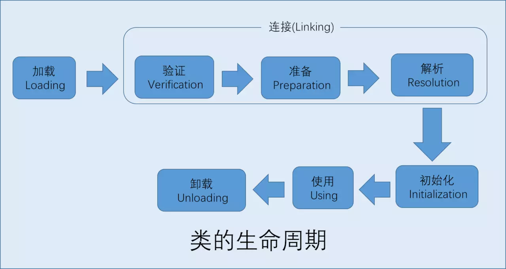
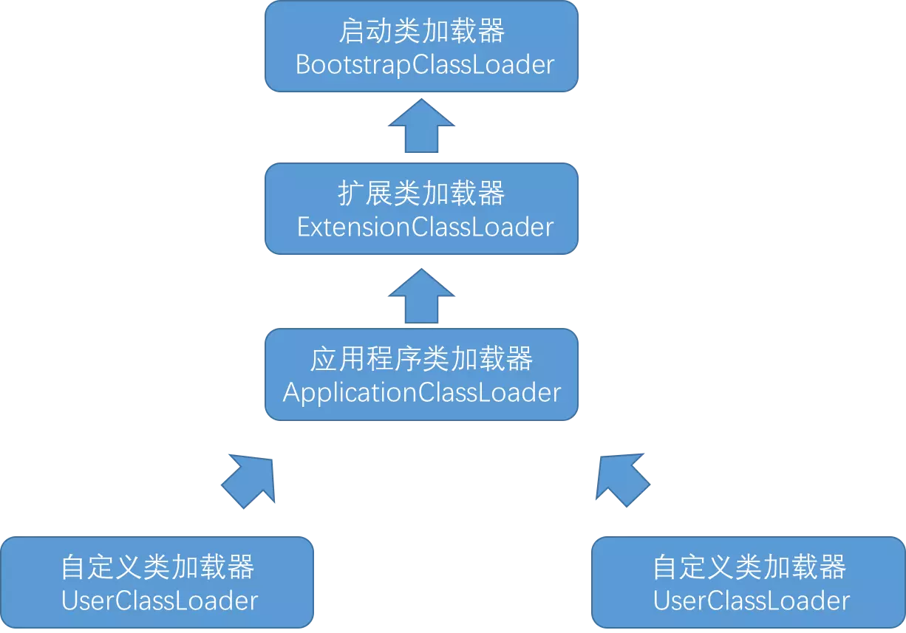

虚拟机把描述类的数据从 Class 文件加载到内存，并对数据进行校验、装换解析和初始化，最终形成可以被虚拟机直接使用的 Java 类型。
在 Java 语言中，类型的加载、连接和初始化过程都是在程序运行期间完成的。
类加载时机

其中加载、验证、准备、初始化和卸载这五个阶段的顺序是确定的。解析阶段可以在初始化之后再开始(运行时绑定或动态绑定或晚期绑定)。
以下五种情况必须对类进行初始化(而加载、验证、准备自然需要在此之前完成)：
- 遇到 new、getstatic、putstatic 或 invokestatic 这 4 条字节码指令时没初始化触发初始化。使用场景：使用 new 关键字实例化对象、读取一个类的静态字段(被 final 修饰、已在编译期把结果放入常量池的静态字段除外)、调用一个类的静态方法。
- 使用 java.lang.reflect 包的方法对类进行反射调用的时候。
- 当初始化一个类的时候，如果发现其父类还没有进行初始化，则需先触发其父类的初始化。
- 当虚拟机启动时，用户需指定一个要加载的主类(包含 main() 方法的那个类)，虚拟机会先初始化这个主类。
- 当使用 JDK 1.7 的动态语言支持时，如果一个 java.lang.invoke.MethodHandle 实例最后的解析结果 REF_getStatic、REF_putStatic、REF_invokeStatic 的方法句柄，并且这个方法句柄所对应的类没有进行过初始化，则需先触发其初始化。
前面的五种方式是对一个类的主动引用，除此之外，所有引用类的方法都不会触发初始化，佳作被动引用。举几个例子。
1 | public class SuperClass { |
类的加载过程
加载
- 通过一个类的全限定名来获取定义次类的二进制流(ZIP 包、网络、运算生成、JSP 生成、数据库读取)。
- 将这个字节流所代表的静态存储结构转化为方法区的运行时数据结构。
- 在内存中生成一个代表这个类的 java.lang.Class 对象，作为方法去这个类的各种数据的访问入口。
数组类的特殊性：数组类本身不通过类加载器创建，它是由 Java 虚拟机直接创建的。但数组类与类加载器仍然有很密切的关系，因为数组类的元素类型最终是要靠类加载器去创建的，数组创建过程如下：
- 如果数组的组件类型是引用类型，那就递归采用类加载加载。
- 如果数组的组件类型不是引用类型，Java 虚拟机会把数组标记为引导类加载器关联。
- 数组类的可见性与他的组件类型的可见性一致，如果组件类型不是引用类型，那数组类的可见性将默认为 public。
内存中实例的 java.lang.Class 对象存在方法区中。作为程序访问方法区中这些类型数据的外部接口。
加载阶段与连接阶段的部分内容是交叉进行的，但是开始时间保持先后顺序。
验证
是连接的第一步，确保 Class 文件的字节流中包含的信息符合当前虚拟机要求。
文件格式验证
- 是否以魔数 0xCAFEBABE 开头。
- 主、次版本号是否在当前虚拟机处理范围之内。
- 常量池的常量是否有不被支持常量的类型（检查常量 tag 标志）。
- 指向常量的各种索引值中是否有指向不存在的常量或不符合类型的常量。
- CONSTANT_Utf8_info 型的常量中是否有不符合 UTF8 编码的数据。
- Class 文件中各个部分集文件本身是否有被删除的附加的其他信息。
- ……
只有通过这个阶段的验证后，字节流才会进入内存的方法区进行存储，所以后面 3 个验证阶段全部是基于方法区的存储结构进行的，不再直接操作字节流。
元数据验证
- 这个类是否有父类（除 java.lang.Object 之外）。
- 这个类的父类是否继承了不允许被继承的类（final 修饰的类）。
- 如果这个类不是抽象类，是否实现了其父类或接口之中要求实现的所有方法。
- 类中的字段、方法是否与父类产生矛盾（覆盖父类 final 字段、出现不符合规范的重载）。
这一阶段主要是对类的元数据信息进行语义校验，保证不存在不符合 Java 语言规范的元数据信息。
字节码验证
- 保证任意时刻操作数栈的数据类型与指令代码序列都鞥配合工作（不会出现按照 long 类型读一个 int 型数据）。
- 保证跳转指令不会跳转到方法体以外的字节码指令上。
- 保证方法体中的类型转换是有效的（子类对象赋值给父类数据类型是安全的，反过来不合法的）。
- ……
这是整个验证过程中最复杂的一个阶段，主要目的是通过数据流和控制流分析，确定程序语义是合法的、符合逻辑的。这个阶段对类的方法体进行校验分析，保证校验类的方法在运行时不会做出危害虚拟机安全的事件。
符号引用验证
- 符号引用中通过字符创描述的全限定名是否能找到对应的类。
- 在指定类中是否存在符方法的字段描述符以及简单名称所描述的方法和字段。
- 符号引用中的类、字段、方法的访问性（private、protected、public、default）是否可被当前类访问。
- ……
最后一个阶段的校验发生在迅疾将符号引用转化为直接引用的时候，这个转化动作将在连接的第三阶段——解析阶段中发生。符号引用验证可以看做是对类自身以外（常量池中的各种符号引用）的信息进行匹配性校验，还有以上提及的内容。
符号引用的目的是确保解析动作能正常执行，如果无法通过符号引用验证将抛出一个 java.lang.IncompatibleClass.ChangeError 异常的子类。如 java.lang.IllegalAccessError、java.lang.NoSuchFieldError、java.lang.NoSuchMethodError 等。
准备
这个阶段正式为类分配内存并设置类变量初始值，内存在方法去中分配(含 static 修饰的变量不含实例变量)。
public static int value = 1127;
这句代码在初始值设置之后为 0，因为这时候尚未开始执行任何 Java 方法。而把 value 赋值为 1127 的 putstatic 指令是程序被编译后，存放于 clinit() 方法中，所以初始化阶段才会对 value 进行赋值。
基本数据类型的零值
| 数据类型 | 零值 | 数据类型 | 零值 |
|---|---|---|---|
| int | 0 | boolean | false |
| long | 0L | float | 0.0f |
| short | (short) 0 | double | 0.0d |
| char | ‘\u0000’ | reference | null |
| byte | (byte) 0 |
特殊情况：如果类字段的字段属性表中存在 ConstantValue 属性，在准备阶段虚拟机就会根据 ConstantValue 的设置将 value 赋值为 1127。
解析
这个阶段是虚拟机将常量池内的符号引用替换为直接引用的过程。
符号引用
符号引用以一组符号来描述所引用的目标，符号可以使任何形式的字面量。直接引用
直接引用可以使直接指向目标的指针、相对偏移量或是一个能间接定位到目标的句柄。直接引用和迅疾的内存布局实现有关。
解析动作主要针对类或接口、字段、类方法、接口方法、方法类型、方法句柄和调用点限定符 7 类符号引用进行，分别对应于常量池的 7 中常量类型。
初始化
前面过程都是以虚拟机主导，而初始化阶段开始执行类中的 Java 代码。
类加载器
对于任意一个类，都需要由加载它的类加载器和这个类本身一同确立其在 Java 虚拟机中的唯一性。如果两个类来源于同一个 Class 文件，只要加载它们的类加载器不同，那么这两个类就必定不相等。
启动类加载器
这个类加载器负责将存放在 \lib 目录中的，或者被 -Xbootclasspath 参数所指定的路径中的，并且是虚拟机识别的（仅按照文件名识别，如 去 rt.jar ，名字不符合的类库即使放在 lib 目录中也不会被加载）类库加载到虚拟机内存中。 getClassLoader() 方法返回 null 。扩展类加载器
这个加载器由 sun.misc.Launcher$ExtClassLoader 实现，它负责加载 \lib\ext 目录中的，或者被 java.ext.dirs 系统变量所指定的路径中的所有类库，开发者可以直接使用扩展类加载器。引用程序类加载器
这个类加载器由 sun.misc.Launcher$AppClassLoader 实现。由于这个类加载器是 ClassLoader中的getSystemClassLoader() 方法的返回值，所以一般也称它为系统类加载器。它负责加载用户类路径（ClassPath）上所指定的类库，开发者可以直接使用这个类加载器，如果应用程序中没有自定义过自己的类加载器，一般情况下这个就是程序中默认的类加载器。

双亲委派模型
双亲委派模型要求除了顶层的启动类加载器外，其余的类加载器都应当有自己的父类加载器。这里类加载器之间的父子关系一般不会以继承的关系来实现，而都是使用组合的关系复用父类加载器的代码。
双亲委派模型的工作过程是：如果一个类加载器收到了类加载的请求，它首先不会自己去尝试加载这个类，而是把这个请求委派给父类加载器去完成，因此所有的加载请求最终都应该传送到顶层的启动类加载器中，只有当父加载器反馈自己无法完成加载请求（它的搜索范围中没有找到所需的类）时，子加载器才会尝试自己去加载。
使用双亲委派模型来组织类加载器之间的关系，有一个显而易见的好处就是 Java 类随着它的类加载器一起具备了一种带有优先级的层次关系。
双亲委派模型的实现：
1 | protected synchronized Class<?> loadClass(String name, boolean resolve) throws ClassNotFoundException { |
java.lang.ClassLoader 的 loadClass() 实现了双亲委派模型的逻辑，因此自定义类加载器一般不去重写它，但是需要重写 findClass() 方法。
破坏双亲委派模型
keyword：线程上下文加载器(Thread Context ClassLoader)。